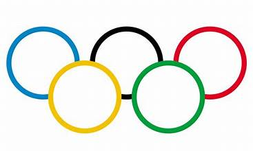

This is a paragraph about sports. Sports are played all around the world. The main global competition for sports are the Olympics. The olympics are held every two years, alternating summer and winter.
The 2024 Olympics were held in Paris and here were the top three countries based on medals:
| Country | Gold Medals | Silver Medals | Bronze Medals | Total |
|---|---|---|---|---|
| United States | 40 | 44 | 42 | 126 |
| China | 40 | 27 | 24 | 91 |
| Great Britain | 14 | 22 | 29 | 65 |
There 2028 Summer Olympics will be held in Los Angeles, California. There will be some new sports added for this iteration of the games. These sports include: